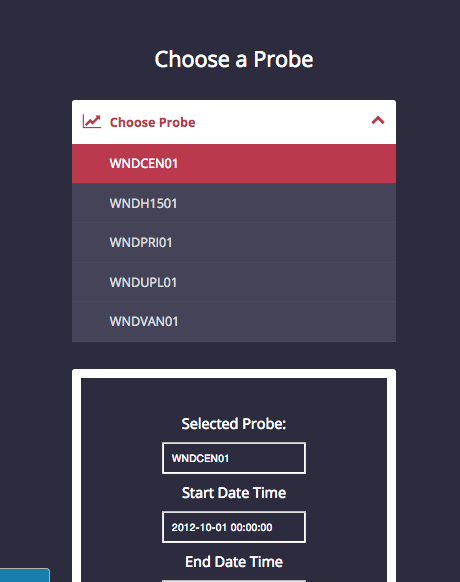

PYTHI : PYthon-based Time Harmonizer and Integrator¶
PYTHI (pronounced pith-thee) is a bottle-backed time aggregator. Its
goal is to make possible all the functionality of GLITCH without relying on reference tables or CGI scripts. Operating under the wonderful WSGI protocols, PYTHI is faster and more flexible than GLITCH (rip: 2014). It provides a simple http based API that can be nested into the GLITCH [GET] syntax, or it can be called independently to respond to arbitrary HTTP requests by displaying html output. PYTHI can be used for MS001, MS043 and testing is being conducted on MS005 and HT004.

PYTHI is written in Python, (v. 2.7.10) and under the hood it needs the `Bottle`_ and `Pymssql`_ libraries.
Main Features¶
- Supports
[GET]request syntax used by Perl CGI scripts and “Cold Fusion” - Formatted, simple output can be easily copied into a .csv
- Does not need reference tables
- Authorization to the SQL-server using read-only authentication
- Open-Source and easy to read and work with
- Fails by throwing boolean falses to prevent bad data escaping
- Supports Python 2.7, which is commonly used by scientists
- Linux, Mac OS X ... and Windows?
- Documentation
- Octocat is the best.
Usage¶
Emulate a local host environment within the firewall.
- download ngrok
- start an ngrok “emulation server”
- point the server to port 8080:
- copy that funky http:// ngrok.io address
Start the application from the command line
- use the standard 2.7 version of python
$ python glitch_bottle.py
Point your web browser / cmd line to your desired endpoint:
- ngrok
- local host without ngrok
- if you are using the cold fusion api:
What follows is a detailed documentation. It covers the command syntax, advanced usage, and also features additional examples.
map_glitch_2.py¶
Using god’s gift to SQL, the information_schema structure, we execute this:
get_cnames = "select column_name from fsdbdata.information_schema.columns where table_name like \'" + table_name + "\' and column_name not like \'dbcode\' and column_name not like \'stcode\' and column_name not like \'entity\' and column_name not like \'format\' and column_name not like \'%method\' and column_name not like \'event_code\' and column_name not like \'%level\' and column_name not like \'sitecode\' and column_name not like \'height\' and column_name not like \'%depth\' and column_name not like \'max%\' and column_name not like \'min%\' and column_name not like \'%max%\' and column_name not like \'%min%\' and column_name not like \'%stddev\'"
that’s right, it’s all the column names you’ll ever need to do all the harmonization and aggregation. Subsequently, we “try” all of the four methods of combining Probe, Probe_code, Date, and Date_Time to get the appropriate information, like this:
sql = "select " + cnames_to_list + " from fsdbdata.dbo." + table_name + " where date >= \'" + startdate + "\' and date <= \'" + enddate +"\' and probe like \'" + probe_code +"\' order by date asc"
This information is returned so that Glitching may occur.
pyGLITCH_backend.py¶
Discussion of the back-end integration here
glitch_bottle.py¶
The glitch interface is a simple set of accordion menus that look into the database and find the appropriate tables and probes.
{kind=link}
You can see here how we drop down from MS001 to get a list of tables:
{kind=link}
And how our clicked on table is automatically used to populate the form. Fill in the date and time range you want as YYYY-mm-dd HH:MM:SS.
{kind=link}
Click Submit Me at the bottom to submit the form and advance to the list of probes. Your submission went through if the button turns red.
{kind=link}
You can also choose a probe, and now your probe will populate the form.
{kind=link}
Type in a number of minutes that you want to GLITCH for. If you get a 500 error on the next page, you probably made a selection that was “out of range”. I have not built in range checks. However, the server is persistent, so you can always go back and try again.
Click Submit Me at the bottom to submit the form and advance to the list of probes. Your submission went through if the button turns red.
{kind=link}
Finally your data is returned as a nice looking comma separated html list.
{kind=link}
If you want to take shortcuts:
- you can use the tag /data/... to use the old [GET] syntax from the cold fusion / perl program - your url would be /data/dbcode=MS04311&entity=02 etc.
- you can use the tage /accordion to load the main page. This is right now how you access on localhost:8080/accordion